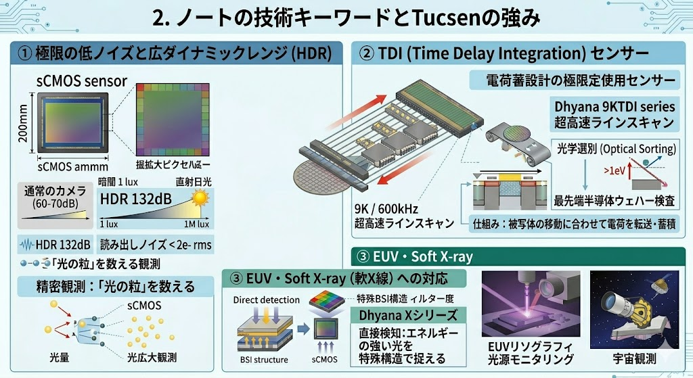
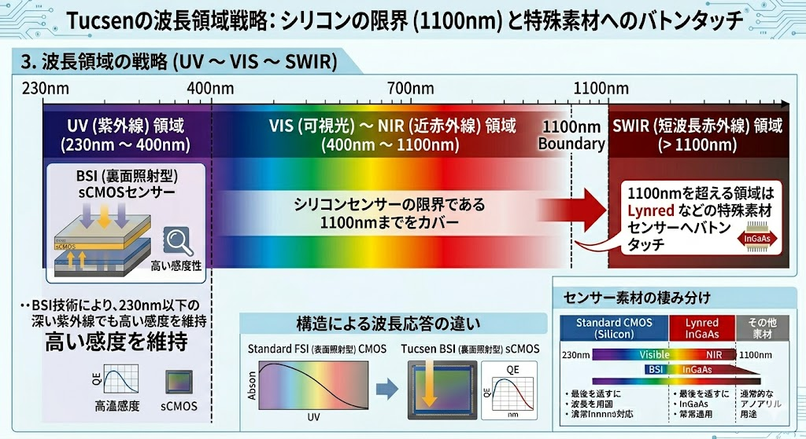
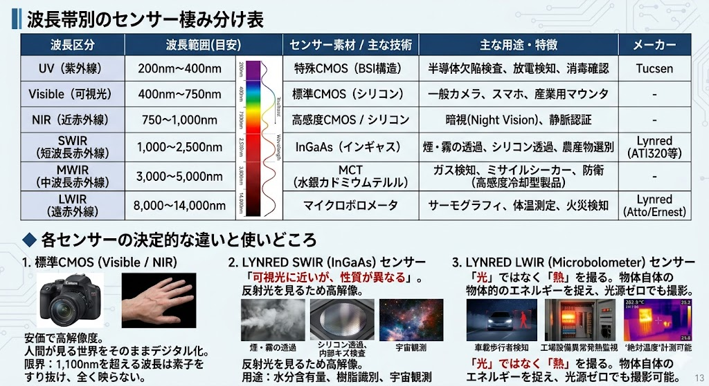
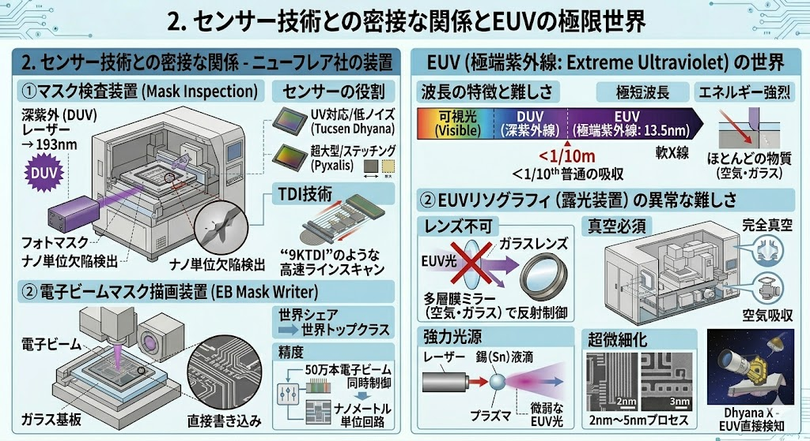

シリコンの物理的限界「1,100nmの壁」と、それを超越するセンサー統合ソリューション
半導体イメージセンサーの受光能力は、素材固有のエネルギー特性（バンドギャップ）に依存する。シリコン（Si）ベースの標準CMOSは1,100nmを超える波長の光子を捕捉できず、赤外線領域では「透明なガラス」と化す物理的限界が存在する。

図1：バンドギャップによる物理的限界と素材の棲み分け
光子エネルギーが1.1eVを下回ると、シリコン内の電子を励起できず、信号変換が不可能となる。これが赤外線領域でシリコンが「真っ暗」になる理由である。
この限界を超えるため、SWIR（短波長赤外線）ではInGaAs、LWIR（遠赤外線）ではボロメータといった特殊素材への移行が必要不可欠となる。
中国Tucsen Photonicsは、BSI（裏面照射）技術と独自のsCMOS設計により、シリコンが対応可能な領域（UV〜NIR）において、世界トップクラスの低ノイズと広ダイナミックレンジを実現している。

図2：極限の低ノイズ、TDI、およびEUV対応技術

図3：BSI技術によるUV感度向上と1,100nmまでのカバー範囲
Dhyanaシリーズに代表されるsCMOS技術は、読み出しノイズを2e- rms以下に抑え、光の粒を数えるような精密観測を可能にする。また、TDI（Time Delay Integration）技術は、高速移動する被写体の電荷を同期蓄積し、半導体ウェハー検査等で圧倒的なスループットを実現する。
シリコンの限界を超える1,100nm以上の領域は、仏LYNRED社のインジウム・ガリウム・砒素（InGaAs）やマイクロボロメータ技術がカバーする。これにより、可視光では不可能な透過観察や熱検知が可能となる。

図4：UVからLWIRまでの波長区分とセンサー素材・用途の対応
煙・霧の透過や、シリコンウェハー自体の透過検査に威力を発揮。水分含有量の選別や樹脂識別など、産業用ソート分野で重要視される。
光ではなく「熱」を捉えるため、完全な暗闇でも撮影可能。工場設備の異常発熱監視や車載歩行者検知などに広く応用される。
これらの高度なイメージング技術は、日本のニューフレアテクノロジー社が手がける世界最高峰の半導体製造装置（マスク検査・描画装置）や、次世代のEUV（極端紫外線）リソグラフィ工程において核心的な役割を果たす。

図5：半導体製造装置におけるセンサーの役割とEUV露光の難しさ
波長13.5nmのEUVは、空気やガラスに吸収されるため、装置全体を真空に保ち、特殊な多層膜ミラーで制御する必要がある。TucsenのDhyana Xシリーズは、このエネルギーの強い光を直接検知する特殊BSI構造を備え、光源モニタリングに不可欠な存在となっている。